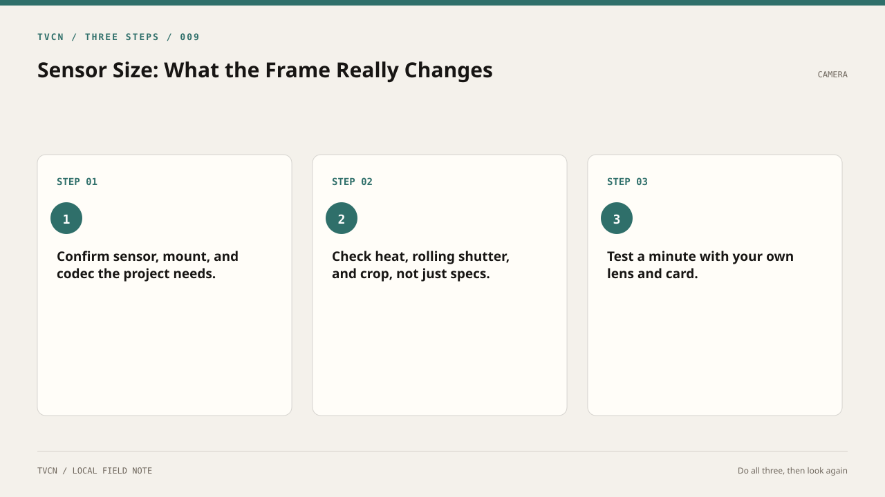

It sets angle, depth and low light, not “image quality”
A larger sensor needs a longer lens for the same angle, gives shallower depth and usually better low light. It does not automatically buy better color, codec or latitude. Choose the format from working distance and depth, then look at the processor and recording specs.
Crop modes change the real angle: the same lens becomes longer and depth changes with it. Calculate with the actual readout width, not the full-frame claim.
Limits
Do not sacrifice focus, cooling and lens cost for “full frame.” A small sensor with good light can be steadier than a large one with the wrong glass.
On set
Put the same lens on M4/3, S35, and full-frame bodies and shoot the same half-body frame. Keep the framing equal, compare background compression and shadow noise, then choose the body for the project.
Three-step flow

Do this
Sensor size changes angle of view, depth of field, and low-light response, not “cinematic look” by itself. Compare the same lens and framing across formats before paying for the difference.
- Mount the same lens on M4/3, S35, and full-frame bodies and keep the same half-body framing.
- Compare background compression, depth of field, and shadow noise, not resolution alone.
- Choose the body for the project, then check mount, recording format, and heat.
Avoid
Do not sell sensor size as a “cinematic” parameter; the look comes from light, lens, and blocking.
Image note. Covers, diagrams and step images on this page are editorial illustrations or structure diagrams, not photographs of a test performed here; they are not evidence of measured gear performance. Where an image is AI-assisted, the caption says so. Read the test conditions in the text before treating an image as proof.